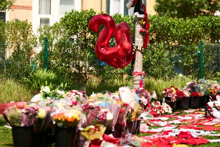
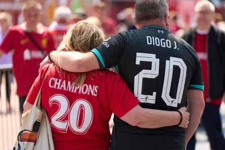

Outside Anfield, where Diogo Jota’s name recently soared from the terraces, fans stood in a sombre, stricken silence.
Barely five weeks ago they had watched their Portuguese hero lift the Premier League trophy, singing and dancing with his soon-to-be wife, their two sons, four and two, and their six-month-old daughter.
Now, in a tragedy that puts the fleeting glories of football into shocking perspective, fans were laying floral tributes.
“It’s just devastating,” said Gary Mann, 48, a season ticket holder, as he struggled to contain his emotions. “He’s a 28-year-old kid. He just always came across as a really nice human being – and that’s the worst part of it. It’s tremendously sad for his family”.
Men, women and children were in tears as they hung scarves from trees and laid football shirts alongside an ever-growing bank of flowers outside Liverpool’s main stand in the hours after Jota’s death was announced on Thursday morning. Balloons bearing the number 20 – Jota’s shirt – were among the tributes, with several fans asking for the club to retire the number in his memory.
Shirts, flowers and number 20 balloons outside Anfield.Photograph: Christopher Thomond/The Guardian
“He was an honorary scouser,” said Elliot Francis, 19, wearing his Liverpool jersey with Jota’s autograph on the back, signed by the Kop favourite after one of the many home games when he would stop and talk to supporters.
Jota’s death – in a car crash in Spain alongside his 26-year-old brother, André Silva – is one of those shocking events that cuts through club rivalry and transcends football. Everton shirts were among those laid alongside Liverpool, Leeds United, Glasgow Rangers, Crystal Palace and other clubs opposite Anfield’s Hillsborough memorial, in memory of the 97 killed in the 1989 stadium disaster.
“My stomach turned this morning when I heard the news,” said Liza, 47, who would be raising eyebrows by wearing her Everton shirt at Anfield on any other day. “It’s not about that today. It’s horrible for Liverpool fans and for the city. It’s just absolutely heartbreaking.”
In just the past six weeks, Jota had lifted the Premier League title with Liverpool and the UEFA Nations League trophy with Portugal . Two months ago he scored the winner in a tense home derby against Everton – his final goal.
Simon Peters and Pauline Thomas felt compelled to be at the stadium to see the tributes to Peters’ favourite player.Photograph: Christopher Thomond/The Guardian
But it was the personal tragedy, rather than the onfield heroics, that left fans dumbstruck on Thursday. Jota married his long-term partner, Rute Cardoso, only 11 days ago, posting a video of their wedding on social media on Wednesday, along with the caption: “A day we will never forget”.
“He had only just got married and had kids. Now his wife’s a widow. It’s truly awful,” said Anthony Ferns, 43. “I live 10 minutes away and rushed over when I heard the news. I still can’t believe it. It’s like something from a disaster movie.”
After laying down a Leeds United shirt, Maz Ferguson said she last saw Jota scoring two goals at Anfield against her club. “But he was a player that you liked,” she said. “He’s gone out at the height of his career but football’s irrelevant. He’s got a wife and three young children, a mum and a dad who’ve just lost two sons.”
Fans gathering to pay tribute on Thursday.Photograph: Christopher Thomond/The Guardian
Ferguson, 34, a lifelong Leeds fan, added: “If any club has been through everything it’s this club but Liverpool fans will come together for Diogo’s family. This club knows how to put its arms around people.”
Angela Rayner, the deputy prime minister, said she was “absolutely devastated” for Jota’s family after she laid a large red-and-white bouquet alongside the tributes. “It’s absolutely heartbreaking. It just shows how life events can change really quickly. I’m absolutely devastated for his wife, his children and his family. I can’t imagine what they’re going through at the moment. My son is 28 and it’s just really shocking.”
Denise Cook, a season ticket holder for 41 years, had written a line from Jota’s famous chant – “And his name is Diogo” – on her floral tribute. “It will go down as one of the tragic days like Hillsborough,” she said.
Angela Rayner and Steve Rotheram, the mayor of Liverpool city region, arriving to lay floral tributes outside the stadium.Photograph: Christopher Thomond/The Guardian
“He just gave everything. He never gave up, he was always chasing the ball. He was very integral. He was just always there and always trying. At the time I thought it was one of the best signings we’d made.”
Amber McKendry, 30, and her partner, Roger McBurney, 34, both Liverpool fans, had flown from their home in Belfast with their three young children for a long-planned tour of the Anfield Museum when the news broke on Thursday morning.
They had to break the news to Freddie, seven, Max, five, and Farrah, four, all wearing their Liverpool shirts at the stadium. “They’re still digesting it,” said McKendry. “They haven’t really dealt with much death in their life. They’ve all went a bit quiet. It’s become a very different day for us all.”